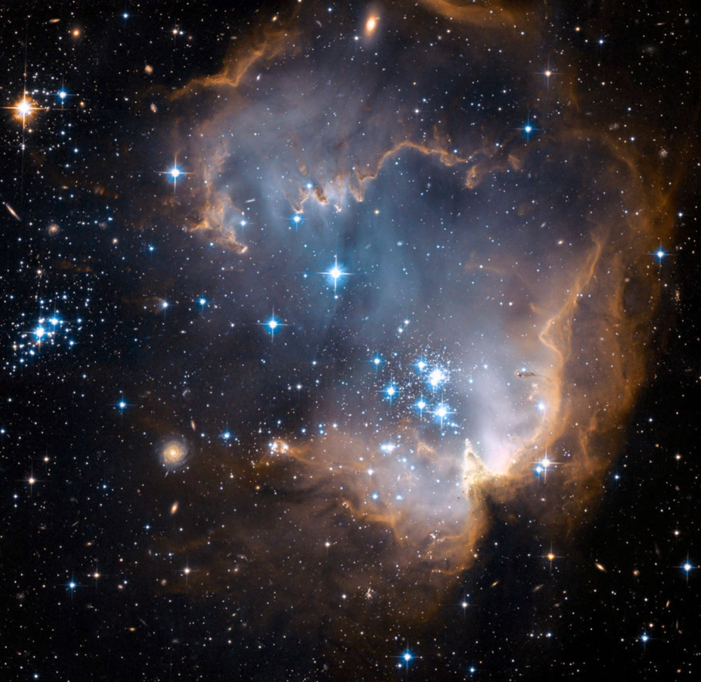
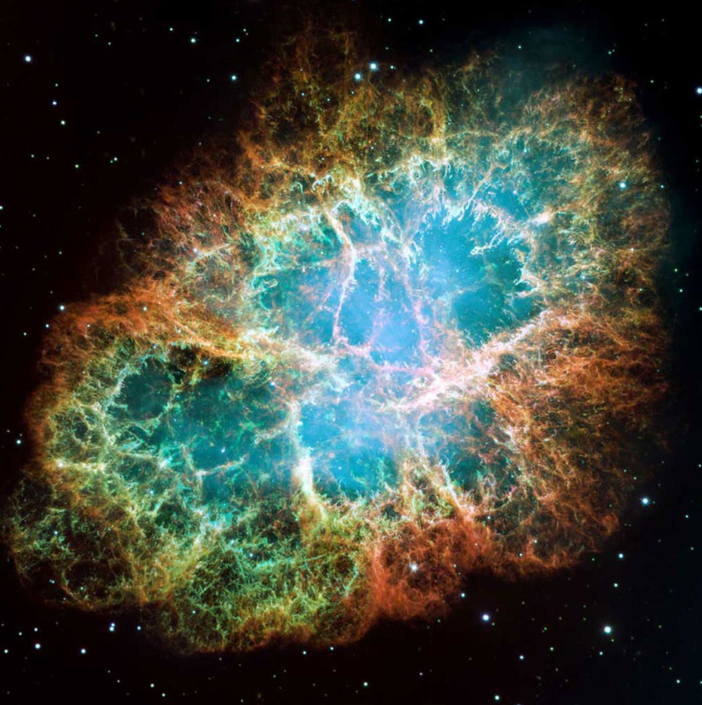
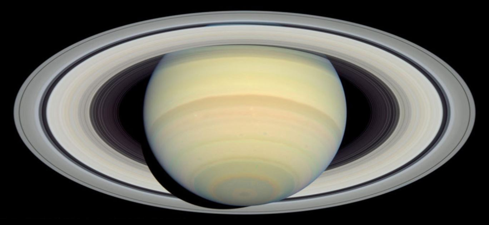

1. Así de majestuoso y tranquilo orbita el telescopio Hubble alrededor de la Tierra, tomando silenciosamente las mejores imágenes que nunca se hayan obtenido del universo que nos rodea. La fecha prevista para su desactivación es el año 2014, pero en vista de los excelentes resultados que ha obtenido pese a todos los problemas iniciales, puede que su vida se alargue un poco más y pueda seguir sorprendiéndonos con más maravillas

2. En este cúmulo estelar llamado NGC 602, cerca de la Pequeña Nube de Magallanes, millones de estrellas jóvenes emiten radiación y energía en forma de ondas que erosionan el material que las rodea creando formaciones visualmente interesantes. El tamaño de lo que se ve en la foto abarca 200 años luz de lado a lado. Foto: NASA / Hubble ST.
3. Esta foto de la Nebulosa Boomerang, situada en la Constelación de Centauro, está tomada a 5.000 años luz de distancia. En esa nebulosa planetaria se forman planetas alrededor de la estrella central; se considera el objeto estelar más frío encontrado en el universo hasta ahora.s
4. Esta galaxia llamada NGC 1300 es el ejemplo típico de galaxia espiral barrada, un tipo de formación en el que los brazos de la galaxia no son espirales que llegan hasta el centro, sino más bien dos brazos formados por estrellas que conectan con el centro a través de una barra recta y continua.
5. Parece que esté aquí al lado, pero en realidad esta galaxia espiral típica, conocida como Messier 66, se encuentra a más de 36 millones de años luz. Su tamaño es tan inmenso que es difícil de imaginar: 96.000 años luz de lado a lado, lo cual quiere decir que ese es el tiempo que se tardaría en cruzarla viajando a la velocidad de la luz: 300.000 kilómetros por segundo.
6. Al igual que en muchas de las fotos del Hubble, los colores visibles de las imágenes son composiciones de los astrónomos para indicar las diversas estructuras de los objetos estelares. En este caso colorearon la Nebulosa del Anillo para mostrar la temperatura de los gases que la rodean, de más caliente (azul y verde) a más frío (amarillo y rojo) en el exterior.
7. Este cúmulo de galaxias situado en la constelación de Pegaso se llama Quinteto de Stefan y muestra cinco galaxias tan diferentes como interesantes (dos de ellas están en el centro, casi unidas). Están situadas a unos 300 millones de años luz de distancia y fueron fotografiadas por la nueva cámara del Hubble en 2009.

8. Esta es una de las imágenes más grandes y con mejor resolución tomadas por el Hubble: está compuesta por un mosaico de fotos de menor tamaño que contienen la totalidad de la Nebulosa del Cangrejo. La explosión de esta supernova tuvo lugar hace unos mil años y se cree que los astrónomos japoneses, chinos y nativos americanos registraron el hecho en sus pinturas y libros.
9. El Hubble ha recibido a diversos grupos de astronautas en estos últimos veinte años con motivo de diversas reparaciones y operaciones de mantenimiento. En esta foto el astronauta Steve Smith trabaja en la segunda misión de reparación del Hubble, que tuvo lugar en 1997.
10. Su nombre técnico es NGC 6543, pero se conoce como Nebulosa Ojo de Gato: es uno de los objetos estelares más complejos conocidos, debido a las particularidades de su estructura, compuesta por diversas capas cuya formación ni siquiera los astrónomos han entendido completamente todavía.
11. El Hubble ve tan lejos, tan lejos, que cuando mira a las profundidades del espacio puede tomar imágenes como esta que contiene luz de estrellas y galaxias situadas a 13.000 millones de años luz de distancia. Eso quiere decir que lo estamos viendo tal y como era hace 13.000 millones de años (se calcula que nuestro universo tiene unos 13.700 millones de años). La imagen se conoce como Campo Ultra Profundo del Hubble: requirió un montaje de diversas tomas hechas día a día durante más de un año y se considera una de las fotos más impactantes de nuestro universo.
12. No son pocas las estructuras fotografiadas por el Hubble que tienen aspecto de ojos, figuras o animales: en realidad somos nosotros las personas las únicas que somos capaces de sacarles esas similitudes con nuestro cerebro acostumbrado a formas y objetos que ya conocemos. Las de esta toma son dos galaxias espirales de la constelación del Can Mayor.

13. En su exploración de los planetas del Sistema Solar, el Hubble nos dejó imágenes tan nítidas como esta del planeta más exótico y sus magníficos anillos: Saturno. Tomada en 2004, en muchas de ellas pueden apreciarse incluso los más pequeños detalles de cómo están formados sus anillos concéntricos.
14. Descubierta por Pierre Méchain a finales del siglo XVIII, es una de las imágenes más nítidas y espectaculares captadas por el Telescopio Espacial Hubble, especialmente porque el el ángulo con que se ve desde nuestro planeta crea un efecto visual tremendamente impactante.
15. Esta es otra de las fotos consideradas más bellas de entre todas las tomadas por el Hubble, simplemente por lo espectacular de su aspecto y colorido. Se corresponde con V838 Monocerotis, una estrella variable situada a 20.000 años luz del Sol.